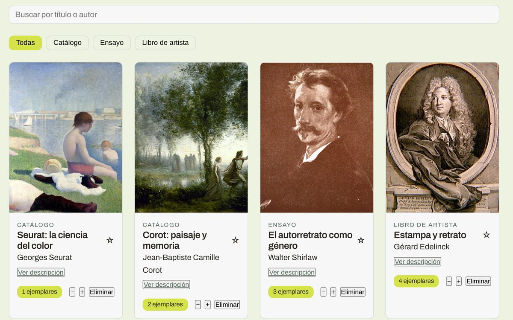

Vue.js, módulos 6 y 7
Archivo de libros de arte
Aplicación para administrar un archivo de libros de arte y catálogos: registro de piezas, búsqueda, filtros, fichas de detalle, favoritos e inventario de ejemplares.
- Vue 3
- Vuex
- Vue Router
- Axios
- json-server